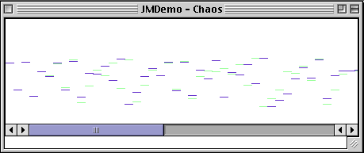

| > Interfaces > GUI components > Sketch Display | |||||||||||||||||||||
Sketch DisplayWhen composing it can be useful to have a visual representation of the
music. The Sketch class is a jMusic utility (found in the jm/util folder). It is initiated with the following line of code: View.sketch(score); where "score" is the name of your jMusic score object. The output of the Sketch utility looks similar to this: 
This tutorial contains: 1. Simple Sketch demo class 2. A more advanced sketch
demo class 3. An explanation of how to use the sketch features simple introduction to the online documentation. Sketch DemoThe SketchTest class is a simple class which generates a random walk melody and displays it using Sketch. Let's have a closer look.
Here the other classes required by this class are identified. Notice that the View class is used for Sketch display.
The class is declared and named "SketchTest" and uses the jm constants JMC (such as pitch C4 = 60). There is only one method in the class, the main method. A score called "s" is created, then a part called "p", and a phrase called "phr". The pitch is initialised to be middle C.
This is where the music is calculated. The details of this are not critical to this tutorial but, in short, 50 notes are created and added to the phrase.
This is the important line for now. The phrase is passed as an argument to the sketch() method of the View class. This line will open a window and show the score as a series of lines. Each line is a note. The relative lengths of the notes indicate their duration and their vertical position correlates to their pitch. Sketch Demo 2The SketchTest2 class is a class that generates a four part random walk score and displays it using Sketch.
After importing and initialising the Score in the main method, the for-loop makes four parts and puts a phrase into each. The sketch display will show notes from each Part in a different colour. A neat programming 'trick' can be gleaned from this example - the counter "i" is used to change the title, channel, instrument, and starting note of each part. Notice that in this example the sketch() method in View takes a Score as its argument (in the above example it took a Phrase) and then two numbers which specify the x and y location of the Sketch window on screen. Note that the View class has methods to display a Phrase, CPhrase, Part, or Score in a Sketch window.
The final section of code is a separate method for generating a phrase. This makePhrase() method is called in the main() method with the line Phrase phr = makePhrase(50 + i*5); The starting pitch for the phrase is passed as an argument to the method. The use of more than one method in a class is covered in more detail in the 'getting Fancy' section of the jMusic tutorial, but as you can see the technique saves much repetition. Sketch Utilities and DocumentationThere are some pretty interesting things you can do with the sketch window:
zoom, draw, play and write to MIDI. To zoom, you grab the little ruler at the bottom, and drag it. To draw, you click and drag on the score. It is interesting to see what your drawings sound like, so to play them,
you can go to the file menu and click on play. If you want to save what you have done as a MIDI file, click on "save
as MIDI file". Now for the Documentation:
|
|||||||||||||||||||||